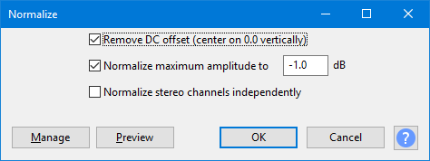

Normalize
Optionally you can remove any DC offset from the tracks.
- Accessed by:
- 
Remove DC offset
When this box is checked Normalize attempts to remove any DC offset in the selection by centering the waveform on the 0.0 amplitude level. Technically, it does this by finding the average of all the sample values in the selection, then subtracting that average value from all the samples.
Removing any DC offset (and preventing it occurring in your hardware in the first place) is important. DC offset can cause clicks or distortion and limits the headroom available for normalization, thus restricting the loudness that can be achieved. See our the DC offset page for more help.
If you are sure your tracks have no offset, unchecking this option will speed up Normalize to some extent.
- By the system clock, right-click over the select then the tab, and then click on the USB device in the list and click . Click the tab set your required bit rate and sample rate from the Default Format dropdown (normally "2 channel 16-bit 44100 Hz").
- Right-click over empty space, show disabled and disconnected devices, then right-click over each device and enable it
- Right-click or select each device, choose "Properties" then look in the "Enhancements" tab
- If there is no "Enhancements" tab, look in the sound device's own control panel in "Hardware and Sound".
For a more detailed walk-through of the above steps for Windows (or if that does not work for your version of Windows), see Windows: accessing the Windows Sound controls.
Normalize Maximum Amplitude to
Enter the value for the maximum amplitude you would like the processed selection to have. The initial default setting is -1 dB, but you can change this. Your choice of settings will be remembered for next use of Normalize any time you change it. A level of -1 dB is just below the maximum amplitude (0 dB) possible without clipping, but gives a little headroom for effects and distortion-free playback on all equipment. Enter a more negative value (for example, -3 dB) to normalize to lower amplitudes.
Entering a positive value is disallowed and causes the "OK" and "Preview" buttons to be disabled. Use if you need to increase amplitude above the 0 dB clipping level.
Normalize stereo channels independently
When this box is unchecked (the default), Normalize will work on the channels of a stereo track as a pair and change the level of both channels by the same amount. Use this if your audio is already correctly balanced as this mode will preserve its original stereo balance.
When this box is checked, Normalize will adjust the amplitude separately for the left and right channels of a stereo track. This is useful for correcting stereo recordings of LPs and cassettes which may be unbalanced, as long as significant clicks are removed first.
Buttons
Clicking on the command buttons give the following results:
- gives a dropdown menu enabling you to manage presets for the tool and to see some detail about the tool. For details see Manage presets
- plays a short preview of what the audio would sound like if the effect is applied with the current settings, without making actual changes to the audio. The length of preview is determined by your setting in , the default setting is 6 seconds.
- applies the effect to the selected audio with the current effect settings and closes the dialog
- aborts the effect and leaves the audio unchanged, closing the dialog
 brings you to the appropriate page in the Manual, this page
brings you to the appropriate page in the Manual, this page
TipsWorkflow order
Normalizing multiple audio tracksIf you select multiple tracks and apply the Normalize effect, then all audio tracks will be independently normalized to the same peak level. For example, if you set "Normalize Maximum Amplitude to:" 0.0 dB, every selected audio track will be normalized to 0.0 dB, irrespective of its original level. Whatever peak volume differences there were between the tracks will be removed. Difference from the Amplify... effectWith Amplify, if you select multiple tracks and apply the effect, then all audio tracks will be amplified by the same amount thus preserving the balance between the tracks. Normalize offers the option to remove DC offset, Amplify does not offer that option. Normalize does not allow clipping above 0 dB, but Amplify does. For a more thorough discussion of differences, see Amplify and Normalize. |